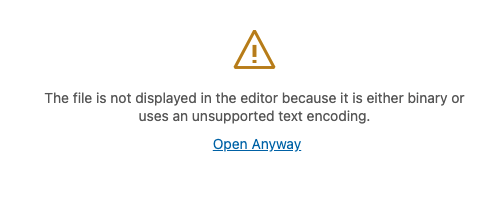
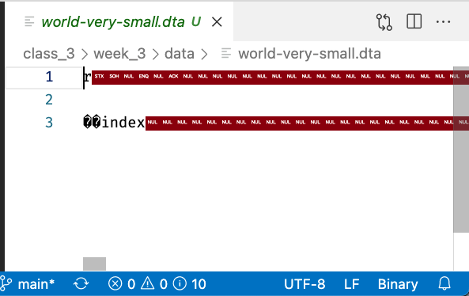

Ways To Store and Read Data: Binary Files¶
In our last reading we talked about plaintext files: files that store data in a human-readable format. In this reading, we will talk about the second type of file you are likely to come across in your career—binary files.
Binary files differ from plaintext files in that the way that the 1s and 0s in the file are meant to be interpreted is not dictated by common text encodings—like ASCII or Unicode—where for example the number 1 is always represented by 00110001, 2 by 00110010, 3 by 001100011, etc.
Instead, binary data files can only be interpreted by software specifically written to interpret the formatted binary file you’re working with, like Microsoft Excel. As a result, if you try and open them in a normal text editor—which will try and interpret the 1s and 0s as Unicode, you’ll see jibberish.
To illustrate, let’s save a version of our small world dataset to a binary .dta format, then try and open it in our VS Code text editor:
[1]:
# Load our CSV
world <- read.csv("data/world-very-small.csv")
world
| country | region | gdppcap08 | polityIV |
|---|---|---|---|
| <chr> | <chr> | <int> | <int> |
| Brazil | S. America | 10296 | 18 |
| Germany | W. Europe | 35613 | 20 |
| Mexico | N. America | 14495 | 18 |
| Mozambique | Africa | 855 | 16 |
| Russia | C&E Europe | 16139 | 17 |
| Ukraine | C&E Europe | 7271 | 16 |
[2]:
# Save to stata format
library(haven)
write_dta(world, "data/world-very-small.dta")
Now if I try and open that .dta file, the first thing that will happen as I will see is this warning:

And if I ask it to open the file anyway, all I see is this:

But that’s not because the file is corrupt (broken/mis-copied)—indeed, if I asked R to open that file with the proper function, we get back our usual table:
[3]:
world_reloaded <- read_dta("data/world-very-small.dta")
world_reloaded
| country | region | gdppcap08 | polityIV |
|---|---|---|---|
| <chr> | <chr> | <dbl> | <dbl> |
| Brazil | S. America | 10296 | 18 |
| Germany | W. Europe | 35613 | 20 |
| Mexico | N. America | 14495 | 18 |
| Mozambique | Africa | 855 | 16 |
| Russia | C&E Europe | 16139 | 17 |
| Ukraine | C&E Europe | 7271 | 16 |
The Kernel crashed while executing code in the the current cell or a previous cell. Please review the code in the cell(s) to identify a possible cause of the failure. Click <a href='https://aka.ms/vscodeJupyterKernelCrash'>here</a> for more info. View Jupyter <a href='command:jupyter.viewOutput'>log</a> for further details.
It’s just because binary data is encoded very differently!
Common Binary Formats¶
Many binary formats were created by a proprietary, closed source program like Microsoft Excel or Stata, but there are also a range of open-source binary file standards. Here is a list (though definitely not an exhaustive one!) of binary formats you may encounter as a data scientist, along with how to read and write data of these types in pandas. As we mentioned in the previous reading, don’t try to memorize these—you can always google them later—just read them over in an effort to get a sense of what the landscape of binary file formats looks like.
Formats Created By Proprietary Software:
.xls,.xlsx: Excel spreadsheets. Excel can open and save.csvfiles, but by default it stores data in.xlsxformats that can also store formatting information, functions, etc.Read with with
readxlpackage (install.packages("readxl")to install) and theread_exceland write. Use thewritexlpackage withwrite_xlsxfunctions.
.dta: Binary data files created by the program Stata.Most people read stata data using the
havenpackage and theread_dtafunction, and write withwrite_dtafrom the same package.
.sav: Binary data files created by the program SPSS.Read with
havenandread_sas.
Open Standards:
RData/RDS: the standard way to store R objects (dataframes, lists, etc.) to disk. Use
saveRDS()andreadRDS().
A Note on Databases¶
Databases—like MySQL, Postgres, MongoDB, etc.—are a potential source of data, but they aren’t (usually) individual files; rather, databases are programs that collectively manage a collection of datasets in one place, and manage access to those datasets.
Python and pandas do have LOTS of tools for interacting with databases, and if that interests you, you can read about the pandas SQL database utilities here. But databases are a discipline unto themselves, so we won’t try and get into them in any depth here!
So What File Format Should I Use?¶
All this raises the obvious question: what format should YOU use when saving your own data?
Every commonly used file type has its place, so really the answer will always depend on what tradeoffs your willing to accept. But here’s some of the pros and cons of using plaintext versus binary files:
Plaintext:
Pros:
Near universal compatibility.
That’s kind of the only thing, actually, but it’s not a small thing by any means!
Cons:
Can be much larger when working with large datasets (though many programs can read zipped or compressed CSVs, which helps a lot).
Don’t store data type information, so if you want to store data in unusual formats (like 32 bit floats instead of 64 bit floats), that information may be lost.
Slower to read and write.
Binary Formats:
Pros:
Faster to read and write.
Some (e.g., parquet or HDF5) offer built in compression and error checking.
Data types are stored.
Cons:
To open them, you have to have the right version of the right software.
So In Conclusion:
Personally, I use binary formats for all my own projects because I appreciate the speed and compression, and I appreciate the fact that all my data types are preserved. But if I were disseminating anything widely, I’d probably use a plaintext format.